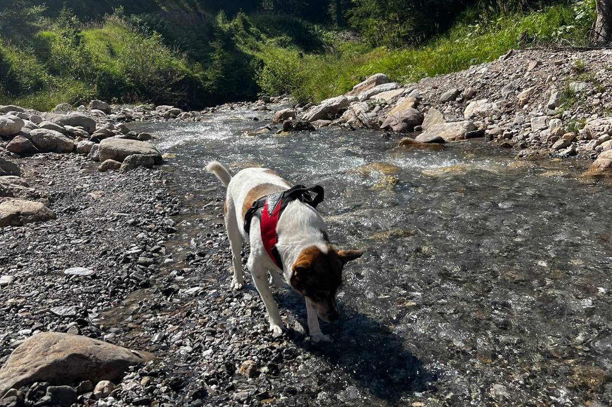

Respira e si muove normalmente
Continua a osservarlo. Fai pause regolari e torna indietro al primo cambiamento nel respiro, nel ritmo o nel comportamento.

← Torna alle Guide di sicurezzaGuide di sicurezza / Caldo ed esposizione
Pianifica ombra e acqua, riconosci presto lo stress da calore e sappi come rinfrescare il tuo cane prima che il sentiero diventi un'emergenza.
I cani si rinfrescano soprattutto ansimando, mentre il movimento produce calore. Controlla tutti e quattro i punti prima di partire.
0 su 4 spuntati. Risolvi ogni punto non spuntato prima di partire.
Confronta il tuo cane con il suo respiro, ritmo e comportamento abituali. Usa la scheda più simile per decidere cosa fare.
Continua a osservarlo. Fai pause regolari e torna indietro al primo cambiamento nel respiro, nel ritmo o nel comportamento.
Interrompi subito lo sforzo. Spostati all'ombra, inizia a rinfrescarlo e non proseguire. Contatta urgentemente un veterinario se il cane non torna rapidamente verso la normalità.
Inizia subito a rinfrescarlo e chiama ora un veterinario. Non aspettare che il cane si riprenda prima di chiedere consiglio.
La temperatura di un cane può continuare a salire anche dopo che lo sforzo è finito. Inizia subito a rinfrescarlo, poi cerca aiuto veterinario.
Materiale veterinario consultato: indicazioni PDSA sul colpo di calore nei cani e Carter et al. (2024) sul raffreddamento dei cani dopo l'esercizio.
Queste sono informazioni generali, non una diagnosi né un sostituto delle cure veterinarie.